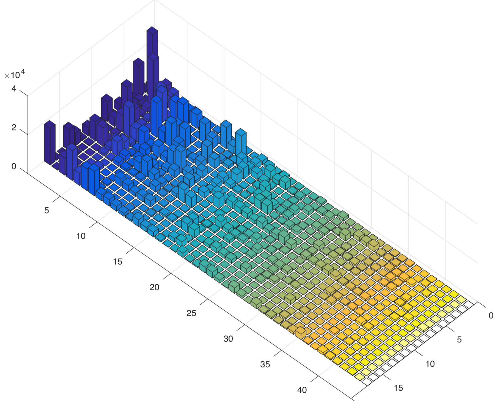
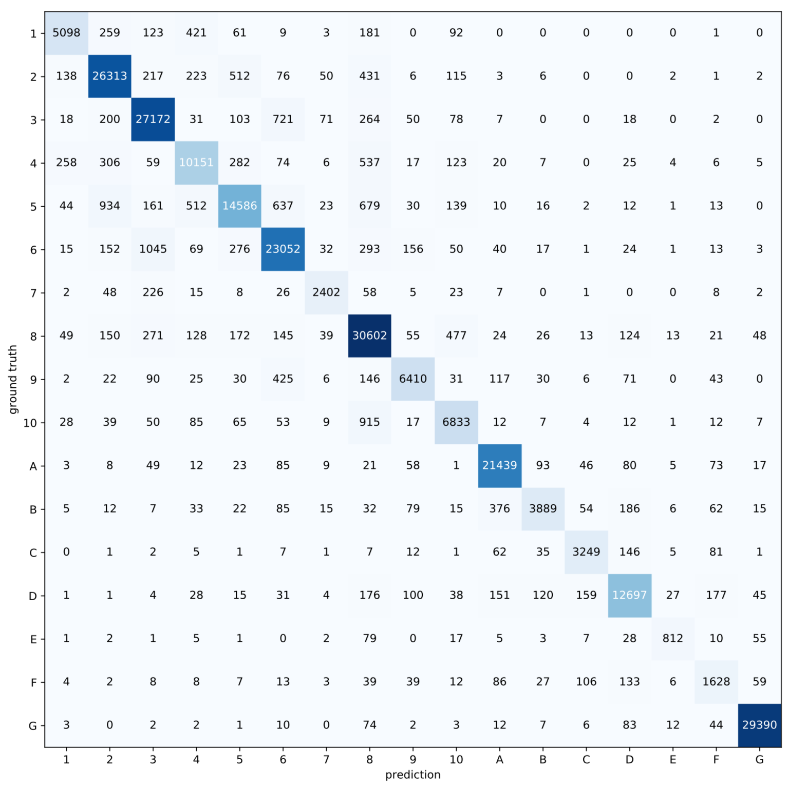
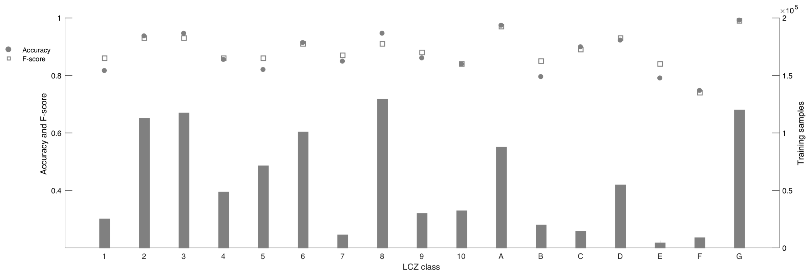

I have been writing a research paper about a project that trains a deep-learning model on a large satellite-image dataset to classify ground features across major land areas. The first stage of the project is complete and ready for publication. I was the main contributor, responsible for big-data processing (generating more than one million image patches from 8.6 TB of remote-sensing data), resolving scientific and technical issues during HPC training and inference, and scientific full-stack development. While preparing the paper, I generated several interesting supplementary figures; this blog presents those figures and only my own contributions.
Some interesting facts about the data.
| Input data volume | ~ 8.6 TB |
|---|---|
| Scale | Global |
| Output DL samples | ~ 1.3 M patches |
| Network | customized resnet |

I used Python's multiprocessing on a 48-core machine to process the data. A key issue was how to organize the generated training samples on disk, because PyTorch and TensorFlow can experience substantially reduced training throughput when handling more than one million individual samples. I split the training dataset into multiple H5 files to maintain normal training speed. This approach requires proper indexing of the samples in each H5 file so that the data generator can sample them randomly.
Below is an unnormalized confusion matrix for the trained model evaluated on the test set.


Merry Christmas!
Created by Cong in 12.2020. Merry Christmas